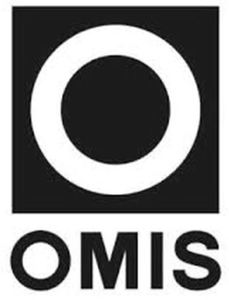

Trade Mark Journal No.2025/009 28 February 2025
WO0000001825006 (7,9,37,42)
Office of origin: Italy
Date of International Registration:5 August 2024
Date of designation in the UK:
5 August 2024

The trademark consists of the letter "O" placed inside a square and in a predominant position relative to the word "OMIS" written below in fanciful capital characters.
- Class 7
- Handling machines; lifting and handling equipment in particular cranes, freight elevators, overhead cranes, hoists and winches; lifting equipment; gantry cranes or bridge cranes; mobile cranes; winches; hoists; spreader beams as parts of machines; load manipulators; grab unloaders; empty container handlers; motors, drives, transmission components, gears and end carriages for cranes, freight elevators, winches, hoists, lifting and handling equipment; hooks and forks for cranes, freight elevators, winches, hoists, lifting and handling equipment; metal frames that are parts of cranes, freight elevators, winches, hoists, lifting and handling equipment; metal support and sliding structures that are parts of cranes, freight elevator, winches, hoists, lifting and handling equipment; brake components for cranes, freight elevator, winches, hoists, lifting and handling equipment; trolleys for cranes, freight elevator, winches, hoists, lifting and handling equipment; cargo handling machines.
- Class 9
- Scientific, nautical, geodetic, photographic, cinematographic, optical, weighing, measuring, signalling, checking (supervision), life-saving and teaching devices and instruments for cranes, freight elevators, winches, hoists, lifting and handling equipment; devices and instruments for conducting, switching, transforming, accumulating, regulating, recycling, recovering or controlling energy and electricity of cranes, freight elevators, winches, hoists, lifting and handling equipment; electronic remotes and speed controls of cranes, freight elevators, winches, hoists, lifting and handling equipment; electronic instruments for measuring load capacity of cranes, freight elevator, winches, hoists, lifting and handling equipment; electronic instruments for measuring the operating life cycle of cranes, freight elevators, winches, hoists, lifting and handling equipment; limit switches computer software for controlling and monitoring cranes, freight elevators, winches, hoists, lifting and handling equipment; computer software and data processing equipment for container handling; power supplies and batteries for cranes, freight elevators, winches, hoists, lifting and handling equipment; electronic instruction manuals; computer software for container positioning and cranes, freight elevators, winches, hoists, lifting and handling equipment guidance; electronic distance measuring devices.
- Class 37
- Installation, maintenance, revamping and repair of cranes, freight elevators, winches, hoists, lifting and handling equipment; consultation relating to installation, maintenance and repair of cranes, freight elevators, winches, hoists, lifting and handling equipment; inspection of cranes, freight elevator, winches, hoists, lifting and handling equipment prior to maintenance; remote diagnosis services for ascertaining the cause of malfunctions in cranes, freight elevators, winches, hoists, lifting and handling equipment prior to maintenance and repair; remote diagnosis services for monitoring the condition and function of cranes, freight elevators, winches, hoists, lifting and handling equipment prior to maintenance and repair; rental of cranes, freight elevators, winches, hoists, lifting and handling equipment.
- Class 42
- Industrial analysis and research services relating to cranes, freight elevators, winches, hoists, lifting and handling equipment; engineering services and design relating to cranes, freight elevators, winches, hoists, lifting and handling equipment; load testing services relating to cranes, freight elevators, winches, hoists, lifting and handling equipment; technical engineering consultation services relating to cranes, freight elevators, winches, hoists, lifting and handling equipment; design and development of computer hardware and software relating to cranes, freight elevators, winches, hoists, lifting and handling equipment.
OMIS GROUP S.P.A.
Representative: STUDIO BONINI SRL, CORSO FOGAZZARO, 8, I-36100 VICENZA, ITALY